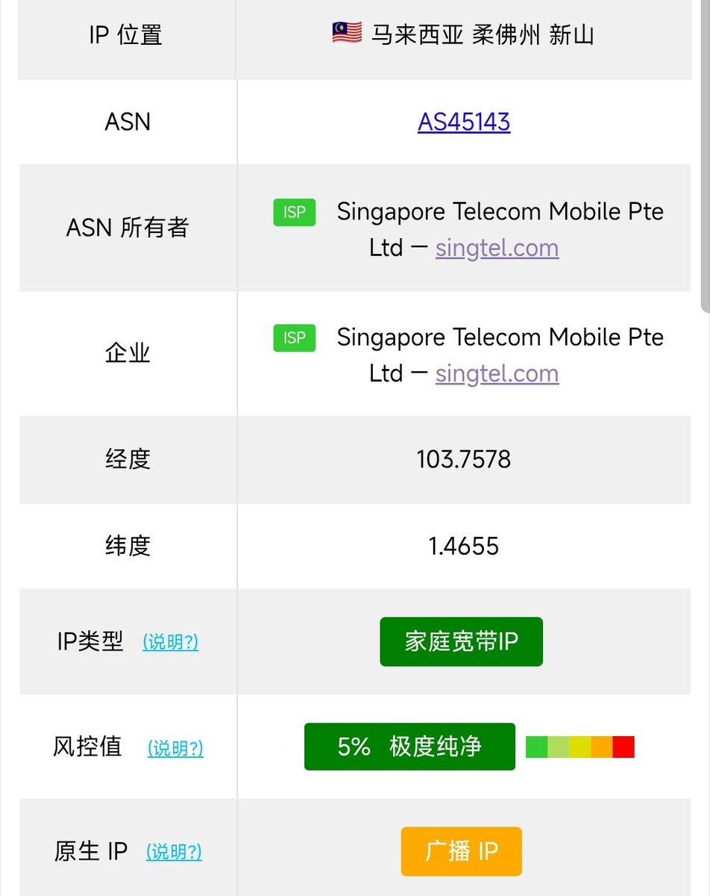

池鱼鱼🍥🏳️⚧️
@Chiyuyu520
@kobe_koto Ping0 花费了大量人力对所有IP段进行了人工标注，已标注的数据可以保证准确，然而IP的使用情况并不是固定的，每天有大量的IP在变动，我们每天都要花时间进行人工标注，对于一些变动后还没来得及标注的IP，可能会出现错误, 整体的数据准确率在95%左右
IP会变的，谁也不知道上一个使用者干了些什么

kobe koto 「夏融冬冻限定版」
@kobe_koto
ping0 的神秘准确性要不还是别吹了
新加坡电信 SingTel Mobile 数据上网
被标记为广播 IP
GeoIP 地区错误 https://t.co/CF5WkGMkQU https://t.co/ljSPOh1jSx